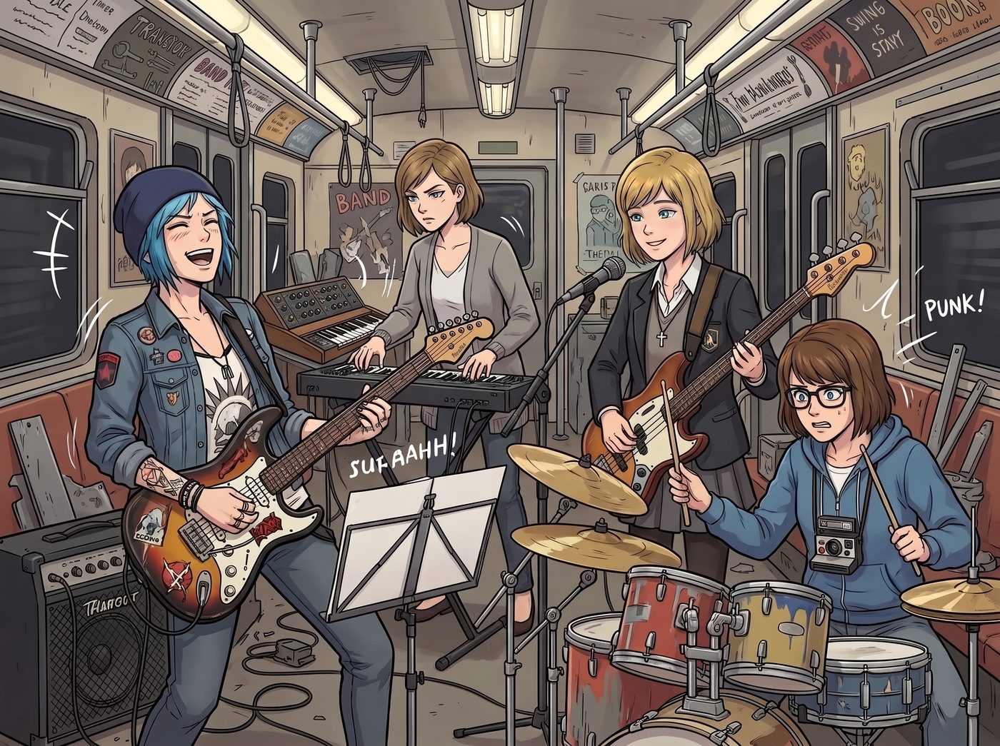
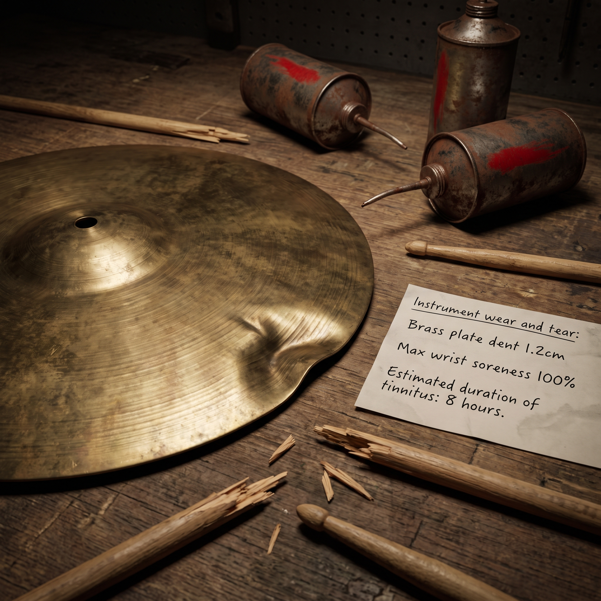
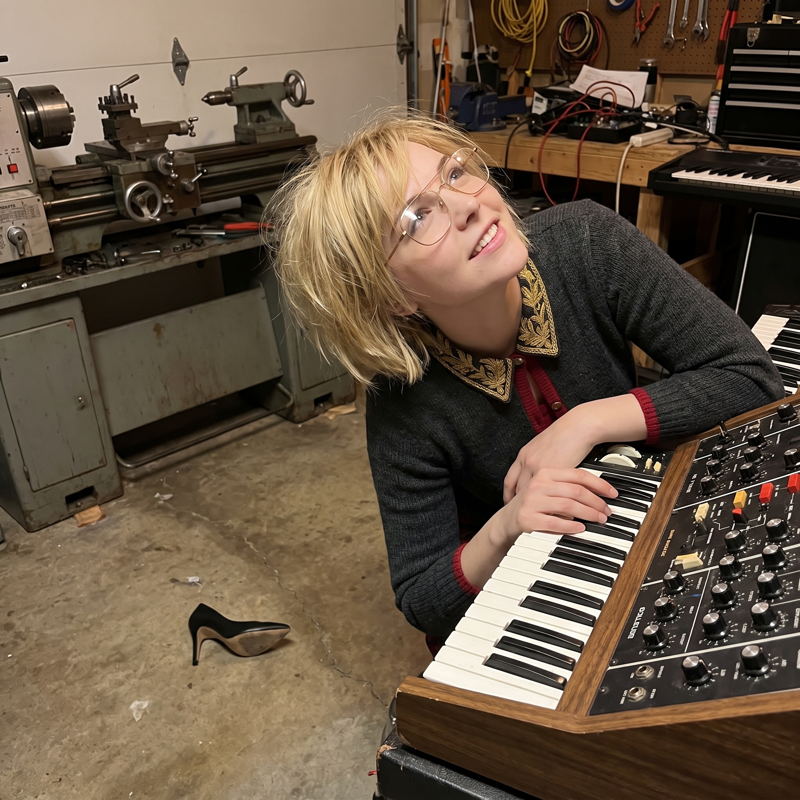
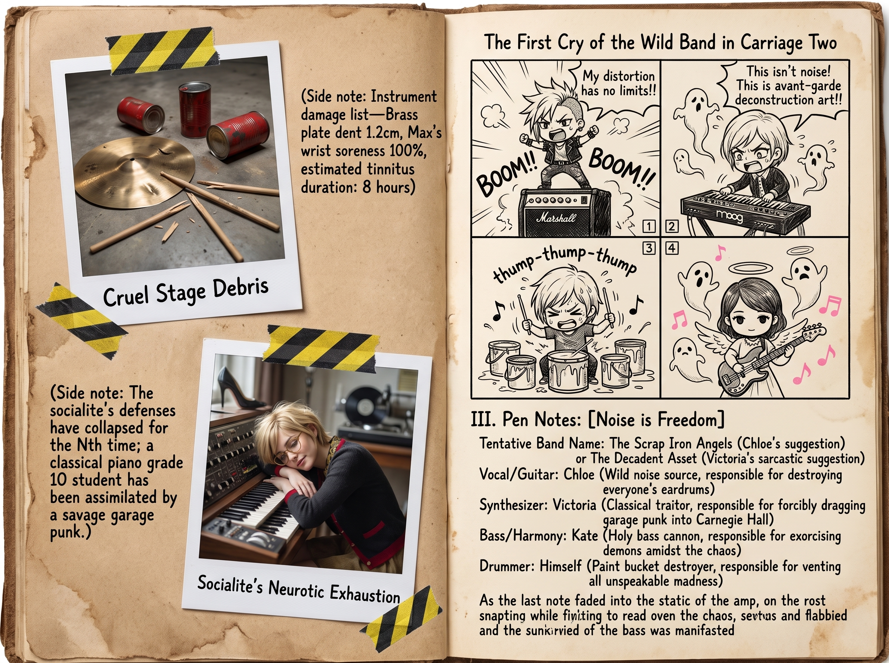

重工業前衛搖滾樂隊




某個週六深夜，Chloe 剛從波特蘭地下倉庫看完一場暴烈無比的車庫朋克演出。帶著滿身大汗、耳鳴和廉價啤酒氣息推開工坊大門時，她的反叛靈魂被徹底點燃，一腳踢開工具箱，大喊著要組建一支代表二號車廂精神的「重工業前衛搖滾樂隊」。
然而，當四個人真正在二號車廂抄起樂器時，各自的音樂底子和畫風瞬間撕裂成了四個完全不同的宇宙。
一、四人音樂功底與樂器分工
Chloe（電吉他/主唱）完全不懂五線譜，全靠青春期在臥室對著經典搖滾磁帶死磕出來的肌肉記憶。她永遠把音箱的失真和增益拉到爆表，彈琴不講究和弦是否乾淨，只追求大三和弦的暴力掃弦和用琴頸摩擦拾音器的刺耳尖叫。
Victoria（合成器/鍵盤）家族自幼請西雅圖交響樂團首席一對一輔導，擁有扎實的古典鋼琴九級至十級功底，對音準和調性有著病態的強迫症。面對 Chloe 的降智噪聲，名媛一邊嫌棄一邊用昂貴的模擬合成器強行給朋克段落加入巴赫風格的對位法，或者華麗的冷波琶音，試圖把車庫爛俗朋克改造成「後現代先鋒前衛搖滾」。
Kate（貝斯/和聲）多年在教會唱詩班擔任女高音與原聲吉他伴奏，對和聲走向與節奏律動有著極高的天賦。她抱著一把沉重的復古短弦貝斯，面帶聖母微笑，彈出全場最穩、最深沉的低音線。當她開口加入空靈乾淨的合聲時，整首原本充斥著暴戾的地下朋克瞬間像被施加了物理淨化術。
Max（鼓手/節奏打擊）以前幾乎沒碰過架子鼓，但手眼協調能力和暗房倒計時思維極強。她坐在由三個油漆桶、一塊黃銅薄板和一套二手軍鼓拼成的重工業鼓組後面，戴著黑框眼鏡認真數拍子。雖然偶爾會因為 Chloe 突然提速而手忙腳亂敲到自己的大腿，但認真砸鼓的模樣意外地帶著一種反差萌的狠勁。
二、首次排練：從災難車禍到後現代奇蹟
「聽好了！開頭老娘先來四個小節的失真轟炸，然後 Max 妳給我把那個破油漆桶敲爛，Kate 跟著我的腳步進，Victoria 妳隨便在妳那台十萬塊的玩具上按幾個高貴的音符！」
Chloe 踩著音箱大吼一聲，右手猛地往琴弦上一揮——
「嗡——轟——！！」
一聲足以震落車頂鐵銹的超高分貝噪聲瞬間撕裂了午夜的車廂。
Victoria 差點被震得從高腳凳上跌下來，氣急敗壞地戴上防噪耳機，纖細的手指在合成器琴鍵上飛速掠過，強行用一串冰冷銳利的琶音切入混亂；Max 咬著下嘴唇，像在暗房搶救底片一樣，鼓槌精準砸在黃銅板上，激盪出清脆金屬聲；而 Kate 則在混亂的重金屬節奏裡，優雅地踩著節奏，用貝斯的低頻將所有即將脫軌的樂器死死拉在同一個和弦框架內。
那是一場融合了重工業金屬打擊、街頭爆音吉他、古典先鋒合成器與天使唱詩班和聲的奇葩交響樂。
三、破鐵道上的午夜安可
排練進行到第三個小時，沒有樂譜，也沒有規矩。
Chloe 甩掉外套，渾身被汗水浸透，站在中央麥克風前嘶吼著她自己隨口胡編的歌詞；Victoria 雖然嘴上罵著「簡直是聽覺強暴」，但嘴角卻噙著興奮的笑意，手指在鍵盤上越彈越快；Max 的黑框眼鏡滑到了鼻尖，手臂揮得發酸卻滿眼放光；Kate 的和聲如同一道破開黑夜的光芒，在車廂穹頂久久回盪。
直到一曲結束，四個人在刺耳的音箱回授電流聲中面面相覷，隨後同時爆發出一陣暢快淋漓的狂笑。
窗外的威拉米特河泛著微光，波特蘭東區的夜空格外寬廣。這支大概永遠不可能登陸主流音樂榜的野生樂隊，在這座由金屬、齒輪與火花築成的安全島裡，用最吵鬧、最純粹的噪聲，演奏著她們對這個世界最自由的宣戰與熱愛。